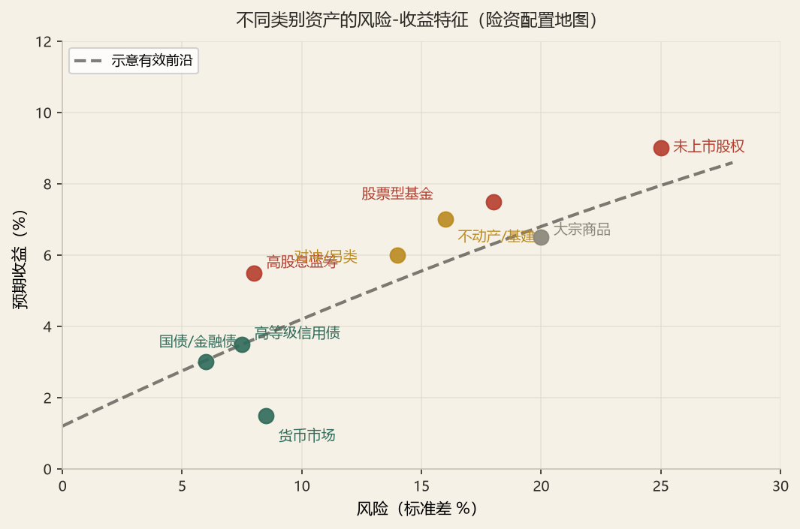

金融市场与投资工具
2.0工具谱系总图
所有投资工具，本质上都是「一组现金流的合约」。分类的钥匙不是名字，而是三个问题：现金流是固定的还是剩余的？期限是短的还是长的？权利是单向的还是双向的？
同业拆借
银行间短期资金，SHIBOR 为定价基准
回购 / 逆回购
以债券质押的短期融资，实质是担保贷款
国库券 · 票据 · 存单
贴现发行，零息，期限 3–12 个月
货币市场基金
组合投资短券，T+0/T+1 赎回
债券
国债、地方债、金融债、企业债、可转债
股票
普通股、优先股、存托凭证
证券投资基金
契约型/公司型，开放/封闭，公募/私募
另类投资
未上市股权、不动产、基础设施、融资租赁
2.0+中国与国际金融市场概况（2025 年最新）★★★
考纲第二部分（一）明确要求「中国金融市场和国际金融市场的概况及特点」。本库补上这一节，用 2025 年的最新数据画一张「中国金融市场全景图」。
① 中国金融市场的体量与地位
| 市场 | 2025 年末规模 | 全球地位 |
|---|---|---|
| 银行业总资产 | 近 470 万亿元 | 世界第一 |
| 股票、债券市场规模 | 债券托管余额 196.7 万亿元；A 股总市值超 100 万亿元（2025-08 首破） | 世界第二 |
| 外汇储备 | 连续 20 年世界第一 | 世界第一 |
| 保险市场 | 银行保险业总资产超 500 万亿元；原保费收入 6.12 万亿元（+7.4%） | 全球最大信贷 + 第二大保险市场 |
② 关键利率与市场温度（2025 年末）
上证指数：3968.8 点（+18.4%） | 深证成指：13525 点（+29.9%） | 两市日均成交额：1.70 万亿元
境外机构持债托管余额：3.5 万亿元（占比 1.8%）
读数的意义：10 年国债 1.85% 意味着「低利率、资产荒」已成为险资投资的基本盘——这正是本库反复强调的「利率下行、负债久期长于资产久期、利差收窄」的现实注脚。险资 2025 年的应对是「债券稳盘 + 权益发力 + 非标收缩」（见下方险资配置）。
③ 险资配置结构（2025 年末）
| 资产类别 | 余额 | 占比 | 趋势 |
|---|---|---|---|
| 债券 | 18.70 万亿元 | 50.4% | 增配放缓，仍是「压舱石」 |
| 股票 + 基金 | 5.7 万亿元 | 15.4% | 全年净增 1.6 万亿元，占比提升 2.6pct |
| 其中：股票 | 3.73 万亿元 | 10.1% | 连续 6 个季度环比改善 |
| 其中：基金 | 1.97 万亿元 | — | — |
| 非标 | 收缩 | — | 持续收缩，让位于标准化资产 |
④ 国际金融市场的特点（对比视角）
| 维度 | 中国 | 美国（全球标杆） |
|---|---|---|
| 核心利率锚 | 央行 7 天逆回购利率（政策利率） | 联邦基金利率（Fed Funds） |
| 国债曲线 | 10 年 1.85%，曲线较平坦 | 长期国债收益率更高，曲线形态受通胀与加息周期影响 |
| 权益市场 | 散户占比较高、政策驱动强、波动大 | 机构主导、成熟有效、注册制 |
| 衍生品 | 157 个期货期权品种，国债期货成交 97 万亿元 | 全球最大衍生品市场（CME/ICE） |

2.1货币市场：短期资金的批发市场★★
货币市场是「一年以内」的融资市场，特征是高流动性、低风险、单笔金额大、机构参与为主。对保险公司而言，它是流动性管理的主战场——不是用来赚钱的，是用来保证随时能赔钱的。
① 四类核心工具
| 工具 | 期限 | 发行/交易方式 | 收益形态 | 险资可投 |
|---|---|---|---|---|
| 同业拆借 | 1 天 – 1 年 | 银行间拆借市场，无担保，凭信用 | 拆借利率（SHIBOR / DR007） | 可（需资格） |
| 债券回购 | 1 天 – 1 年 | 以债券质押融资 | 回购利率（R007 / DR007） | 可，主要流动性工具 |
| 国库券 / 央行票据 | 3 个月 – 1 年 | 贴现发行，到期按面值偿还 | 折扣额即利息 | 可 |
| 商业票据 · 大额存单 | ≤ 1 年 | 商业票据凭信用发行；大额存单为银行存款凭证 | 贴现或固定利率 | 商业票据受评级限制；大额存单可 |
② 贴现型工具的收益率换算（易考）
真实收益率（投资收益率）：r = (F − P) / P × 365 / n
价格：P = F × (1 − d × n / 360)
③ 为什么精算师必须关心货币市场
一个实操指标：「流动性覆盖率」——未来 30 天内可变现的高流动性资产 ÷ 未来 30 天净现金流出，监管要求通常不低于 100%。若过低，说明公司靠「卖资产」应对退保，一旦市场冻结就会陷入被动。
一个小切口：2022 年债市调整期间，部分中小险企因流动性覆盖率逼近红线，被迫在低点抛售债券，实现亏损反过来侵蚀偿付能力。这类「流动性驱动的亏损」在精算报告里往往被归为「投资损失」，但根因在流动性管理。
2.2债券：四类发行人、五种条款★★★
债券是保险资金配置的绝对主力（通常占 60%–80%）。理解债券，关键是看三个维度：谁发的（信用）、发多久（利率）、有什么特殊条款（期权性）。
① 按发行人分类
| 类型 | 发行人 | 信用特征 | 税率 | 险资配置逻辑 |
|---|---|---|---|---|
| 国债 | 财政部 | 无信用风险，只有利率风险 | 利息免征企业所得税 | 久期匹配主力，超长期品种稀缺 |
| 地方政府债 | 省级政府（含计划单列市） | 准主权信用，风险权重 20% | 利息免征 | 当前险资第一大品种，供给充足、期限长 |
| 金融债 | 政策性银行 / 商业银行 | 政策性银行准主权；商业银行次级债有减记条款 | 应税 | 收益略高于国债，需关注资本占用 |
| 企业债 / 公司债 / 中期票据 | 非金融企业 | 有信用风险，须达评级门槛 | 应税 | 信用下沉换取票息，受比例与评级双重约束 |
② 五种关键条款
| 条款 | 含义 | 对谁有利 | 对定价的影响 |
|---|---|---|---|
| 赎回条款（Callable） | 发行人在约定期限后可按约定价格提前赎回 | 发行人（利率下行时赎回再融资） | 投资者要求更高收益率补偿 → 价格更低 |
| 回售条款（Putable） | 投资者可按约定价格提前卖回给发行人 | 投资者（利率上行时避险） | 投资者愿接受更低收益率 → 价格更高 |
| 可转换条款 | 可按规定转股价转换为股票 | 投资者（股性收益），发行人（低票息融资） | 价值 = 纯债价值 + 转股期权价值 |
| 减记 / 转股条款 | 触发事件（如核心一级资本充足率低于阈值）时本金减记或强制转股 | 发行人 | 银行二级资本债、永续债的典型设计 |
| 调整票面利率条款 | 约定时点上调或下调票面利率 | 视方向 | 国内含权债的常见设计 |
③ 可转换公司债券：一个能被单独出大题的工具
转换价值 = 转换比例 × 股价 = (100 / P₀) × P
转股溢价率 = (可转债价格 ÷ 转换价值 − 1) × 100%
纯债价值 = 未来票息与本金按同期信用债收益率贴现
④ 债券的税收比较（高频计算）
投资决策：当 rg > rc × (1 − t) 时，选国债
2.3股票：普通股、优先股与股性证券★★
① 普通股 vs 优先股（必考对比）
| 维度 | 普通股 | 优先股 |
|---|---|---|
| 索取权顺序 | 最后（剩余索取权） | 在债权人之后、普通股之前 |
| 收益形态 | 不固定，取决于盈利与分红政策 | 约定股息率，通常固定 |
| 表决权 | 有（一股一票） | 一般无，特殊情况（如连续欠息）可恢复 |
| 期限 | 永续，无到期日 | 多数无到期日，但有赎回条款或强制转股设计 |
| 清偿顺序 | 最后 | 先于普通股 |
| 风险收益 | 高风险高收益，波动大 | 类债属性，波动小 |
| 会计属性 | 权益（股本 + 资本公积 + 未分配利润） | 视条款而定，可能计入其他权益工具（权益）或金融负债 |
② 认股权证与股性证券
| 工具 | 本质 | 关键特征 |
|---|---|---|
| 认股权证 | 发行人（或第三方）发行的、赋予持有人按约定价格购买公司股票的权利 | 期限长（数年）；行权会增加公司股本（稀释效应）；常与债券搭配发行作为「甜味剂」 |
| 存托凭证（DR） | 在本国市场代表境外股票的可转让凭证 | CDR（中国存托凭证）是境外上市企业回归 A 股的通道 |
| 可交换债（EB） | 上市公司股东以其持有的股票为标的发行的可转债 | 转股不稀释总股本（只是股东变更），与可转债有本质区别 |
③ 股票交易市场与价格指数
| 分类 | 内容 | 风险特征 |
|---|---|---|
| 一级市场 | IPO（首次公开发行）、增发、配股 | 定价风险、破发风险 |
| 二级市场 | 沪深主板、科创板、创业板、北交所 | 流动性与波动风险 |
| 场外市场 | 新三板、区域性股权市场 | 流动性极低，估值困难 |
市值加权指数（标普型）：Index = Σ (Pi Qi) / 基期市值 × 基期指数
等权重指数：各成分股权重相同，需定期再平衡
2.4基金：组织结构与类型辨析★★
① 组织结构：五方主体
基金投资人
基金份额持有人，享有收益权与知情权
基金发起人
发起设立基金，承担募集责任
基金管理人
基金公司，负责投资决策与运作
基金托管人
银行/信托，独立保管资产、监督投资
基金代理人
销售机构（银行、券商、第三方平台）
② 类型辨析（六组）
| 分类维度 | 类型 | 关键区别 | 考试要点 |
|---|---|---|---|
| 运作方式 | 开放式 | 份额可变，按净值申购赎回 | 价格 = 单位净值，无折溢价 |
| 封闭式 | 份额固定，在交易所按市价交易 | 价格围绕净值波动，可能出现折价 | |
| 组织形式 | 契约型 | 依据基金合同，无法人资格 | 我国公募基金均为契约型 |
| 公司型 | 依据公司法设立，有法人资格 | 美国共同基金的主流形式 | |
| 募集方式 | 公募 | 公开宣传，投资者人数不限，门槛低 | 信息披露要求严格 |
| 私募 | 非公开，合格投资者，人数上限 | 保险资金可通过私募基金间接投资 | |
| 投资标的 | 股票型 / 债券型 / 混合型 / 货币型 | 按合同中约定的资产比例界定 | 股票型要求股票 ≥ 80% |
| 指数型 / QDII | 被动跟踪 / 境外投资 | QDII 受境外投资 15% 总额约束 |
③ 基金的费用结构
| 费用类型 | 收取方式 | 典型水平 | 对精算的意义 |
|---|---|---|---|
| 申购费 | 买入时一次性，前端收费 | 0.8%–1.5%（常有折扣） | 影响建仓成本 |
| 赎回费 | 卖出时收取，持有期越短费率越高 | 0%–1.5% | 鼓励长期持有 |
| 管理费 | 按日计提、从基金资产中扣除 | 股票型 1.2%–1.5%/年；债基 0.3%–0.7% | 直接从净值中扣，不需投资者另行支付 |
| 托管费 | 按日计提、从基金资产中扣除 | 0.05%–0.25%/年 | 同上 |
| 销售服务费 | C 类份额收取，按日计提 | 0.2%–0.8%/年 | C 类无申购费但有销售服务费 |
2.5另类投资：股权、不动产、基建、融资租赁★★
另类投资是保险资金对抗「利差损」的关键武器——久期长、收益稳定、与公开市场相关性低。但它也是资本占用最高、流动性最差的一块。
① 未上市股权（含拟上市股权投资）
- 战略投资者：持股比例高、有产业协同、锁定期长（36 个月）
- 财务投资者（PE/VC）：以退出获利为目的、锁定期 12 个月、占股比例小
- 产业资本：上下游整合、长期持有
② 不动产与基础设施
| 类型 | 现金流特征 | 久期 | 险资适配度 |
|---|---|---|---|
| 投资性不动产（写字楼/商业） | 租金收入，随经济周期波动 | 15–25 年 | 与长期负债匹配度高，但流动性差 |
| 基础设施债权投资计划 | 固定利息 + 本金，多有担保 | 5–15 年 | 最典型的 ALM 工具，收益高于同期限国债 100–200BP |
| 保障性租赁住房 | 租金 + 政策性补贴 | 20–30 年 | 政策鼓励方向，现金流稳定 |
| 产业园区 / 数据中心 | 租金 + 服务费 | 10–20 年 | 新经济基础设施，需评估技术迭代风险 |
③ 融资租赁
2.6衍生品：远期、期货、互换、期权★★★
四种衍生品，本质都是「约定未来」——区别在于是否标准化、是否在交易所、损益是否对称、是否有权利金。这一节的概念辨析直接决定 CH.04 能不能学下去。
① 四类衍生品对比表（必背）
| 维度 | 远期 | 期货 | 互换 | 期权 |
|---|---|---|---|---|
| 交易场所 | 场外（OTC） | 交易所 | 场外为主 | 交易所 + 场外 |
| 标准化 | 非标准，可定制 | 高度标准化 | 非标准 | 交易所标准化／场外定制 |
| 信用风险 | 有（对手方违约） | 几乎无（中央对手方清算） | 有 | 买方有，卖方无（已收权利金） |
| 保证金 | 无（或双边保证金） | 有，逐日盯市 | 通常无 | 买方付权利金，卖方缴保证金 |
| 损益对称性 | 对称 | 对称 | 对称 | 不对称 |
| 到期义务 | 必须履约 | 可平仓、可交割 | 按约定交换现金流 | 买方可放弃行权 |
| 流动性 | 差 | 好 | 差 | 交易所品种好 |
② 保证金与逐日盯市：一个必须会算的机制
当账户权益 < MM 时触发追缴（Margin Call），须补足至 IM 水平
当日盈亏 = (结算价 − 开仓价) × 合约乘数 × 手数 × 方向
③ 利率互换
浮动端支付 = 名义本金 × 参考利率 × (天数/360)
净支付 = |固定端 − 浮动端|，由一方支付给另一方
2.7结构化产品与指数编制★
① 结构化产品的解剖
保本型：本金投资于零息债，到期收回面值；剩余资金买期权
非保本型：本金部分投资于风险资产，或卖出期权获取权利金
| 类型 | 结构 | 收益特征 | 投资者承担的风险 |
|---|---|---|---|
| 保本型（本金保护票据） | 零息债 + 看涨期权 | 下跌保本，上涨参与 | 发行人信用风险 + 机会成本 |
| 收益增强型 | 债券 + 卖出期权 | 票息高于普通债 | 标的下跌时本金损失 |
| 区间累计型（雪球类） | 卖出带障碍的看跌期权 | 标的震荡时高收益 | 敲入后承担全部下跌 |
| 可转债型 | 债券 + 转股期权 | 下有债底、上随股价 | 信用风险 + 股价风险 |
② 主要指数一览
| 指数 | 编制方法 | 成分 | 用途 |
|---|---|---|---|
| 上证综合指数 | 市值加权（总股本） | 上交所全部上市股票 | A 股整体走势 |
| 沪深 300 | 市值加权（自由流通股本） | 沪深 300 只大盘股 | 业绩基准主流选择 |
| 中证 500 / 1000 | 市值加权 | 中小盘 | 中小盘风格基准 |
| 中债综合指数 | 市值加权 | 银行间与交易所债券 | 债券组合业绩基准 |
| 道琼斯工业平均 | 价格加权 | 30 只蓝筹 | 美股代表性指数 |
| S&P 500 | 市值加权（自由流通） | 500 家大市值 | 美股基准 |
§8演算器
可转债价值与转股溢价计算器
价格加权指数与拆股调整
§9核心答案速查
| 考点问题 | 核心答案 |
|---|---|
| 货币市场工具的特点 | 期限 ≤ 1 年、流动性高、风险低、单笔金额大、机构为主、利率市场化 |
| 同业拆借的特点 | 无担保、凭信用、期限短、拆借利率为基准利率（SHIBOR） |
| 贴现率 vs 真实收益率 | 贴现率分母为面值 F、按 360 天；真实收益率分母为价格 P、按 365 天。贴现率 < 真实收益率 |
| 普通股 vs 优先股 | 优先股优先分红、优先分剩余财产，但通常无表决权，股息不税前扣除 |
| 优先股利率为何高于债券 | 清偿顺序靠后 + 无税盾 + 无到期日（久期长） |
| 认股权证 vs 看涨期权 | 权证行权增加公司股本（稀释）；看涨期权行权不改变股本 |
| 开放式 vs 封闭式 | 开放：份额可变、按净值申赎；封闭：份额固定、交易所按市价交易 |
| 基金五方主体 | 投资人、发起人、管理人（决策）、托管人（保管）、代理人（销售） |
| 远期 vs 期货 | 标准化与否、是否逐日盯市、信用风险由谁承担（场外 vs 中央对手方） |
| 价格加权指数遇拆股 | 必须调整除数；市值加权不需调整 |
| 可转债转股溢价率 | (转债价格 ÷ 转换价值 − 1) × 100% |
| 融资租赁本质 | 以「融物」实现「融资」，转移与所有权有关的全部风险和报酬 |
§10教材深挖与易错辨析
深挖一：为什么保险资金必须配置大量债券？——「三差」框架下的必然选择
从利差损说起
寿险公司的利润来源可分解为死差、费差、利差三部分。在利率下行周期，死差与费差的贡献相对稳定且有限，利差成为决定盈亏的主导变量。而利差的本质是：
债券在其中的三重角色
角色一 · 现金流匹配。寿险负债是「确定的时点 + 不确定的金额」（死亡、退保、费用），而债券提供「确定的时点 + 确定的金额」。用债券的确定性去覆盖负债的确定性部分，这是 ALM 的第一层。
角色二 · 久期匹配。负债久期 15–20 年，资产久期若只有 8 年，则利率每下行 100BP，净资产减少约（负债久期−资产久期）× 负债现值 × 1% = 7 × 数千亿 × 1%，这个数字足以吞噬数年利润。债券是唯一能提供 15 年以上久期的规模化资产——未上市股权、不动产虽期限长，但久期概念不适用（无固定现金流）。
角色三 · 资本效率。偿二代下，国债与地方债的信用风险因子接近于零，权益风险因子高达 31%–48%，未上市股权 28%–41%，不动产 8%–15%。同样 100 亿元资本，配置债券可以支撑的规模远大于配置权益。在资本约束下，债券是「性价比」最高的资产。
深挖二：可转债三价值的统一框架
一张图看清可转债的价格构成
| 股价状态 | 主导因素 | 转债表现 | 投资者策略 |
|---|---|---|---|
| 深度虚值（P ≪ P₀） | 纯债价值 | 债性强、价格接近面值、跌幅有限 | 作为债券持有，赚票息 |
| 平值附近（P ≈ P₀） | 期权价值最大 | 溢价率最高，波动率敏感 | 博弈波动率与下修条款 |
| 深度实值（P ≫ P₀） | 转换价值 | 股性强，几乎与正股同涨同跌 | 转股或卖出，注意强赎风险 |
回售、下修、强赎：三个条款如何影响价值
回售条款（投资者权利）：若股价长期低于转股价一定比例，投资者可要求公司按面值加利息回售。这构成价格下限。
转股价下修条款（发行人权利）：股价持续低迷时，公司可下调转股价以促成转股。这对投资者是利好——下修后转换价值提升。
强制赎回条款（发行人权利）：股价连续高于转股价一定比例（如 130%）达若干交易日，公司可按面值加利息赎回。这构成价格上限——投资者被迫转股。
深挖三：指数编制的三种方法与其经济含义
为什么指数编制方法重要？
指数不只是「统计工具」，它是投资策略的载体。不同的编制方法，隐含不同的市场假设与交易行为。
| 方法 | 公式 | 隐含假设 | 行为特征 |
|---|---|---|---|
| 价格加权 | ΣP / D | 股价高的公司更重要 | 无再平衡；拆股需调 D |
| 市值加权 | Σ(PQ)/基期市值 | 市场是有效的，市值反映价值 | 涨的越买越多（动量倾向），无需交易 |
| 等权重 | (1/N)·Σ(P/P₀) | 各股票预期收益相同 | 定期再平衡，隐含反转策略（卖涨买跌） |
| 基本面加权 | 按营收/账面价值/分红加权 | 市值可能偏离基本面（错误定价） | 反抗「市值加权＝追高」，含价值倾向 |
对保险资金而言，选择什么样的基准，就等于选择什么样的投资哲学——用沪深 300 做基准，就意味着接受「大市值占优」的市场结构；用中证 800 做基准，则更接近全市场。
四个高频易错点
§11自测
- A. 6.11%、5.93%
- B. 5.93%、6.11%
- C. 5.93%、5.93%
- D. 6.11%、6.11%
看答案与解析
答案：B。
贴现率 d = (100 − 98.5) ÷ 100 × 360 ÷ 91 = 0.015 × 3.9560 = 5.934%（分母为面值 100）
真实收益率 r = (100 − 98.5) ÷ 98.5 × 365 ÷ 91 = 0.0152284 × 4.0110 = 6.108%（分母为价格 98.5）
结论：贴现率 5.93%、真实收益率 6.11%，选 B。
若按 360 天口径计算真实收益率，则 r = 0.0152284 × 3.9560 = 6.024%，此时答案会接近「5.93%、6.02%」——但选项中不存在该组合，说明命题人采用的是 365 天口径。
- A. 看涨期权
- B. 认股权证
- C. 可交换公司债（EB）
- D. 股指期货
看答案与解析
答案：B。
A 看涨期权：二级市场标准化合约，行权时卖方交付存量股票，总股本不变。
B 认股权证：由发行人发行，行权时公司新发股票，股本增加、原股东被稀释。
C 可交换债：由上市公司股东以其持有的存量股票为标的发行，转股只是股票从股东转给债券持有人，总股本不变。
D 股指期货：现金交割，与股本无关。
看答案与解析
完整解题过程
（1）转换比例 = 100 ÷ 25 = 4 股/张
（2）转换价值 = 4 × 30 = 120 元
（3）转股溢价率 = (128 ÷ 120 − 1) × 100% = 6.67%
（4）期权溢价 = 转债价格 − 纯债价值 = 128 − 95 = 33 元。其中转换价值超纯债部分 120 − 95 = 25 元属于「实值部分」，剩余 33 − 25 = 8 元为纯时间价值。
结论：该转债溢价率 6.67%（偏低），说明市场对其转股前景较为确定，价格主要由转换价值驱动，股性强。若正股下跌 20%（至 24 元），转换价值降至 96 元，此时纯债价值 95 元成为有力支撑，下行空间约 (128−96)/128 = 25%，即最大损失约 25%。
看答案与解析
完整答题过程
（1）风险判定：负债久期（18）> 资产久期（11），久期缺口 = 11 − 18 = −7 年。这意味着利率下行时，负债现值上升幅度大于资产现值上升幅度，净资产受损；利率上行时净资产受益。当前利率处于历史低位，下行风险大于上行收益，缺口方向不利。
（2）敞口量化：净资产变动 ≈ −久期缺口 × 总资产 × Δr = −(−7) × 1000 × Δr。若利率下行 100BP（Δr = −1%），净资产变动 ≈ −7 × 1000 × (−1%) = +70 亿元？注意符号：ΔE ≈ −(D_A − D_L·L/A) × A × Δr/(1+r)。简化下：D_A − D_L = −7，Δr = −1%，则 ΔE ≈ −(−7) × 1000 × (−1%) = −70 亿元。即利率下行 100BP，净资产减少约 70 亿元。
（3）三条路径：
| 路径 | 做法 | 效果 | 代价 |
|---|---|---|---|
| 拉长资产久期 | 增配 30 年国债、超长期地方债、长久期债权计划 | 直接压缩缺口 | 超长债供给有限、流动性差、票息低（收益率曲线平坦时拉久期性价比低） |
| 用国债期货加久期 | 买入国债期货（多头），合约久期约等于 CTD 久期 | 成本低、流动性好、可快速调整 | 保证金占用、每日盯市造成利润波动、基差风险、会计处理复杂 |
| 用利率互换收固定 | 收取固定利率、支付浮动利率，合成长久期资产 | 无需占用大量资金，可精准调久期 | 对手方信用风险（需 collateral）、抵押品管理成本 |
结论：优先顺序应为「先用现货拉长（结构性解决）→ 再用衍生品补缺口（战术性调整）→ 最终通过产品定价与负债结构优化（根本性解决）」。单纯依靠衍生品对冲只能管理短期波动，无法解决长期利差损——真正的解药在负债端：降低预定利率、缩短保证期限、增加分红与万能等非保证成分。